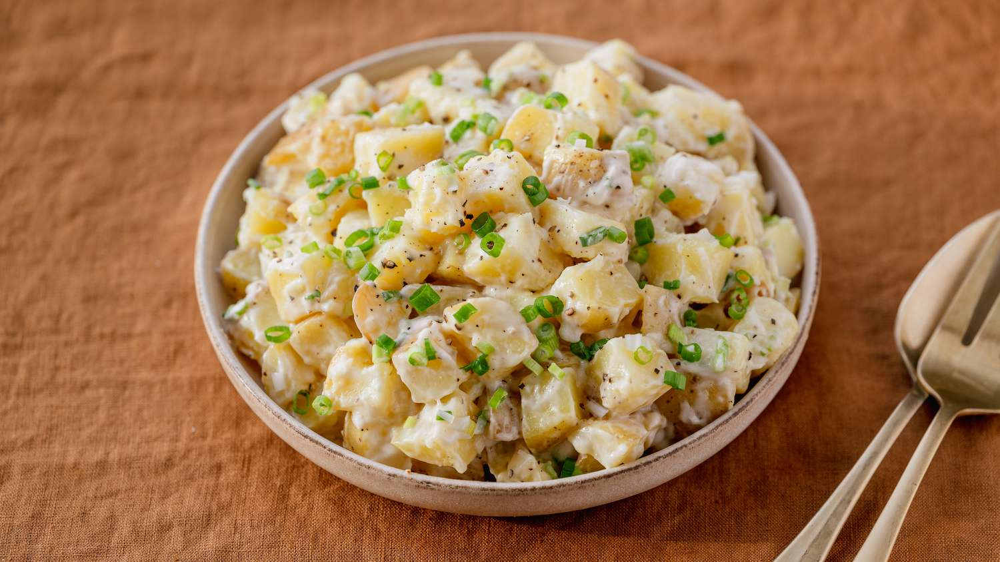

POTATO SALAD

This Southern potato salad includes eggs, celery, and relish.
Should be served warm.
Ingredients
4 potatoes
4 large eggs
1 cup mayonnaise
¼ cup sweet relish
2 tablespoons of mustard
Steps:
Step 1
Gather all ingredients.
Step 2
Bring a large pot of salted water to a boil. Add potatoes and cook until tender but still firm, about 15 minutes; drain and chop.
Step 3
At the same time, place eggs in a saucepan and cover with cold water. Bring water to a boil; cover, remove from heat, and let eggs stand in hot water for 10 to 12 minutes. Remove from hot water; peel and chop.
Step 4
Combine cooked potatoes and eggs with mayonnaise, celery, relish, garlic, mustard, salt, and pepper in a large bowl.
Step 5
Gently mix together and serve warm.